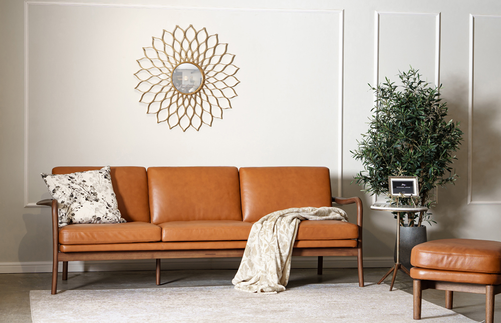
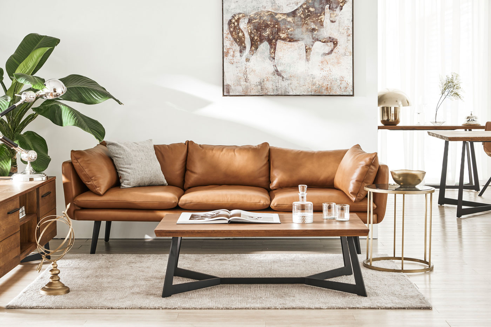
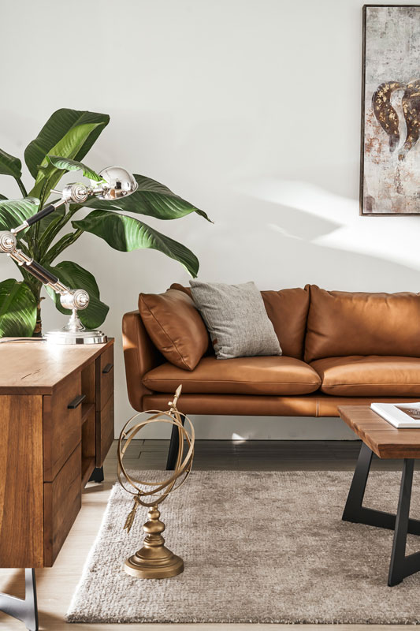
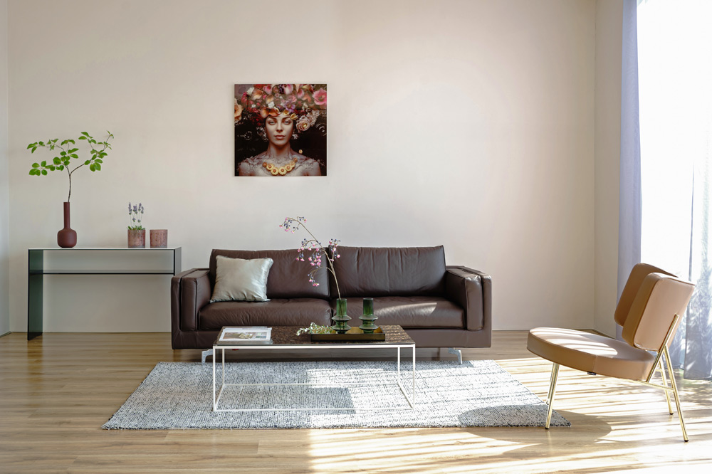
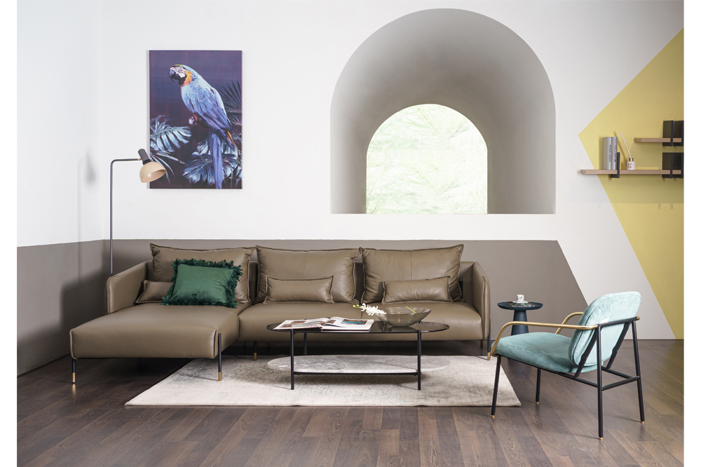
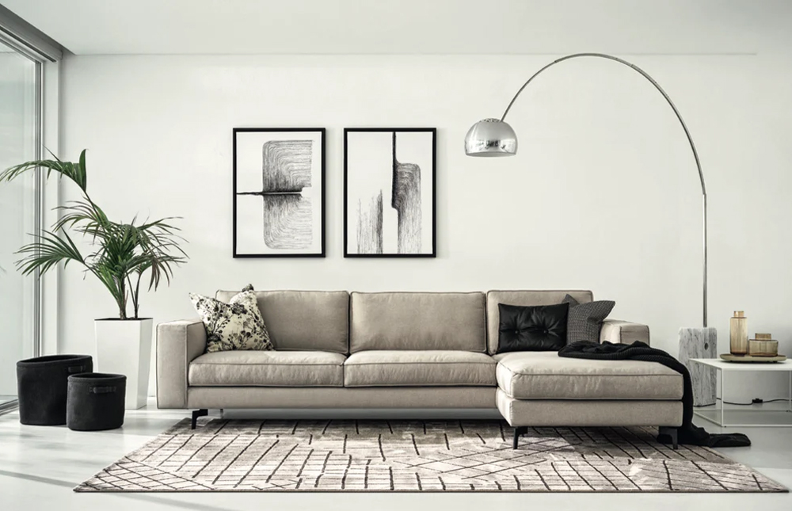

Giữa rất nhiều lựa chọn về chất liệu sofa, bạn phân vân không biết nên chọn chất liệu nào vừa có thể đáp ứng nhu cầu sử dụng, vừa bền bỉ lại vừa đạt tiêu chuẩn thẩm mỹ. Hãy để Nhà Xinh gợi ý những lý do bạn nên chọn sofa da cho phòng khách nhé.
5 LÝ DO CHỌN SOFA CHO PHÒNG KHÁCH

1. Bền bì theo thời gian
Yếu tố đầu tiên mà mọi người quan tâm trong quá trình chọn sofa có lẽ là độ bền của sản phầm. Với chất liệu da tự nhiên, sofa có thời hạn sử dụng kéo dài gấp 4 lần so với sofa vải, đồng thời tuổi thọ cũng bền lâu hơn so với sofa da công nghiệp. Đối với những gia chủ có điều kiện kinh tế tốt, đây có thể coi là Một khoản đầu tư chất lượng và lâu dài.


2. Dễ dàng vệ sinh
Bề mặt sofa da có đặc điểm trơn, bóng, không thấm nước nên rất thuận tiện cho việc lau dọn. Với những gia đình có con nhỏ, đôi khi, trong quá trình vui chơi, trẻ sẽ vô tình làm rơi rớt vụn đồ ăn hoặc làm đổ nước lên sofa. Nếu là sofa vải thfi sẽ tốn rất nheiuef công sức dọn dẹp, nhưng sofa da sẽ giúp bạn tiết kiệm thời gian vệ sinh về mặt sofa hơn. Chỉ cần một chiếc khăn ẩm để đánh bay mọi vết bẩn trên bề mặt sofa da
Ngoài ra sofa da sẽ ít bị bám mùi hơn so với sofa vải, vì vậy chất lượng không khí và độ bền của sản phầm sẽ được đảm bảo tốt hơn.


3. Tối ưu trả nghiệm
Sofa da tự nhiên thường có lỗ chân lông giúp thoáng khí hơn so với da công nghiệp - loại da thường được trộn thêm nhựa PVC hoặc nylon, nhầm tăng tính thẩm mỹ nên thường mang lại cảm giác bí bách khi ngồi lâu
Ngoài ra, sofa da thật cóđộ đàn hồi nên sẽ không có tình trạng bề mặt da bị co rút hoặc thô ráp sau một thời gian sử dụng. Với ưu thế thoáng khí, sofa da có khả năng mang lại cảm giác ấm áp vào mùa đông và mát mẻ vào mùa hè.
4. Tạo không gian san trọng
Sofa da thật với đường vân tự nhiên cùng màu sắc độc đáo luôn mang đến cảm giác sang trọng và đẳng cấp cho căn hộ. Sofa màu da đen, nâu. cognac rất phù hợp với không gian phòng khách hiện đại. Nếu yêu thích những màu sắc và không gian mới lạ, gia chủ có thể chọn dòng sofa được gia công từ chất liệu da công nghiệp, vì những sản phẩm này thường có màu sắc đa dạng.

5. Linh Hoạt Theo Từng Phong cách
Sofa da thật đa số sẽ có tông màu trầm hơn da nhân tạo nên thường được chọn để bài trí cho phòng khách cổ điển. Còn sofa da công nghiệp thì có màu sắc đa dạng nên sẽ phù hợp với nhiều phong cách hơn. Với gia chủ yêu thích phong cách cổ điển thì có thể chọn dòng sofa da với kiểu dáng cứng cáp, đường nét cổ điển . Còn phòng khách hiện đại thì chọn sofa da với kết cấu thanh mảnh, gọn gàng mang đến một thiết kế tối giản và thanh thoát . Màu sắc và kiểu dáng đa dạng giúp cho dòng sofa da có thể linh hoạt ứng biến với các loại hình không gian khác nhau.
Ngoài ra sofa da sẽ ít bị bám mùi hơn so với sofa vải, vì vậy chất lượng không khí và độ bền của sản phầm sẽ được đảm bảo tốt hơn.
Hoạt động trong lĩnh vực thiết kế thiết kế nội thất, NT đặt mục tiêu trở thanh nhà cung cấp các sản phầm nội thất hiện đại sang trọng hàng đầu tại TPHCM
Địa chỉ: Bình Khánh, Cần Giờ, Thành Phố Hồ Chí Minh